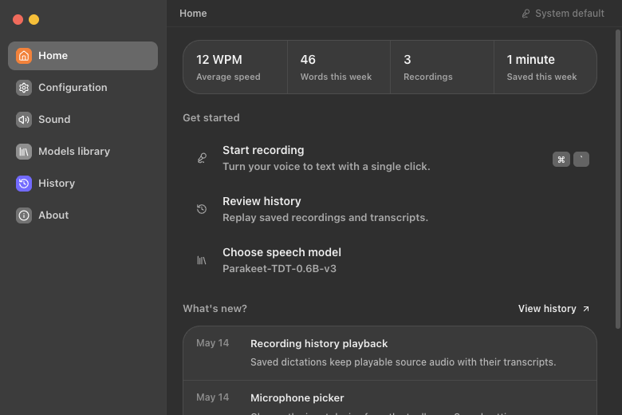
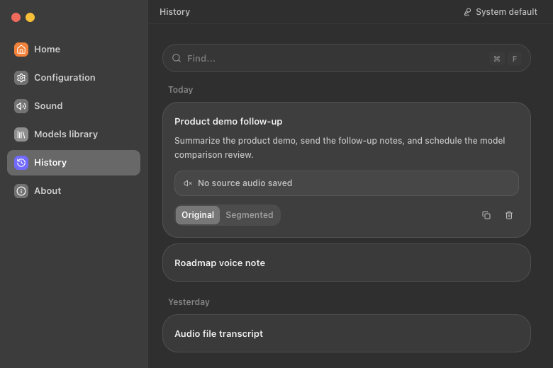
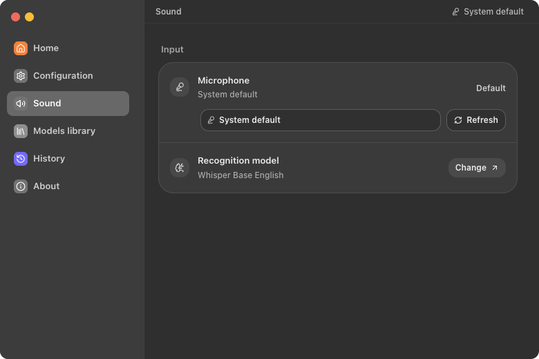
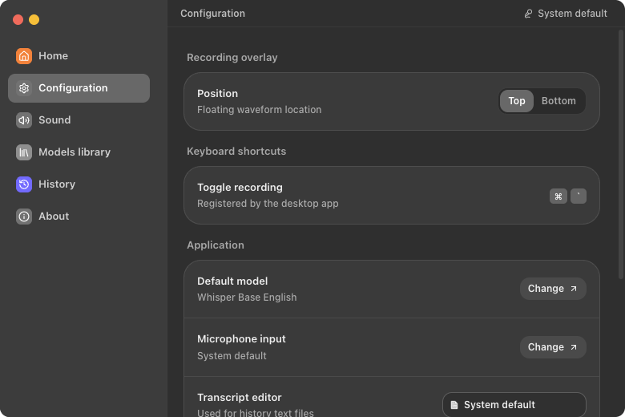
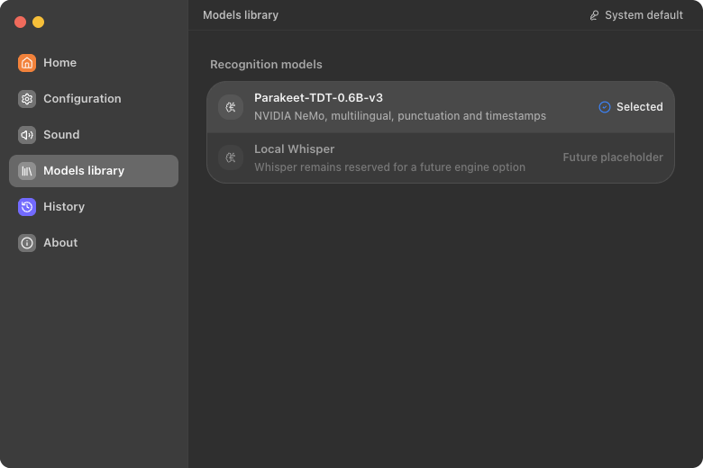
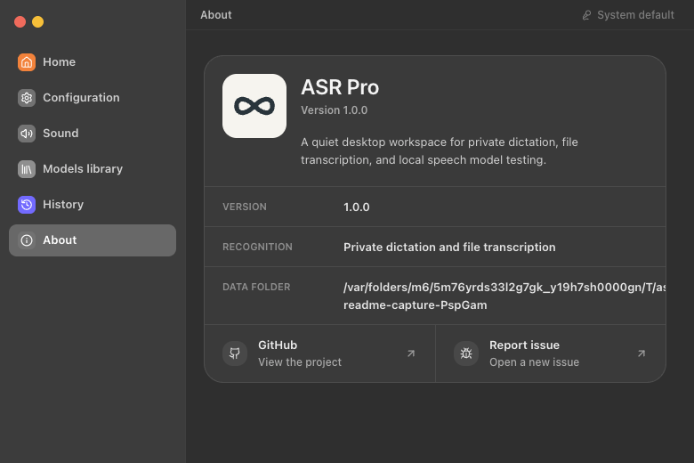

Capture speech
Home, tray, or shortcut.
Record locally. Search every clip. Reprocess rough transcripts without sending your voice to someone else's server.






Private capture, searchable history, device control, and preferences that stay close to the operating system.
Home, tray, or shortcut.
Search, copy, open, delete, reprocess.
Refresh devices and control microphone behavior.
Clipboard, editor, startup, overlay placement.